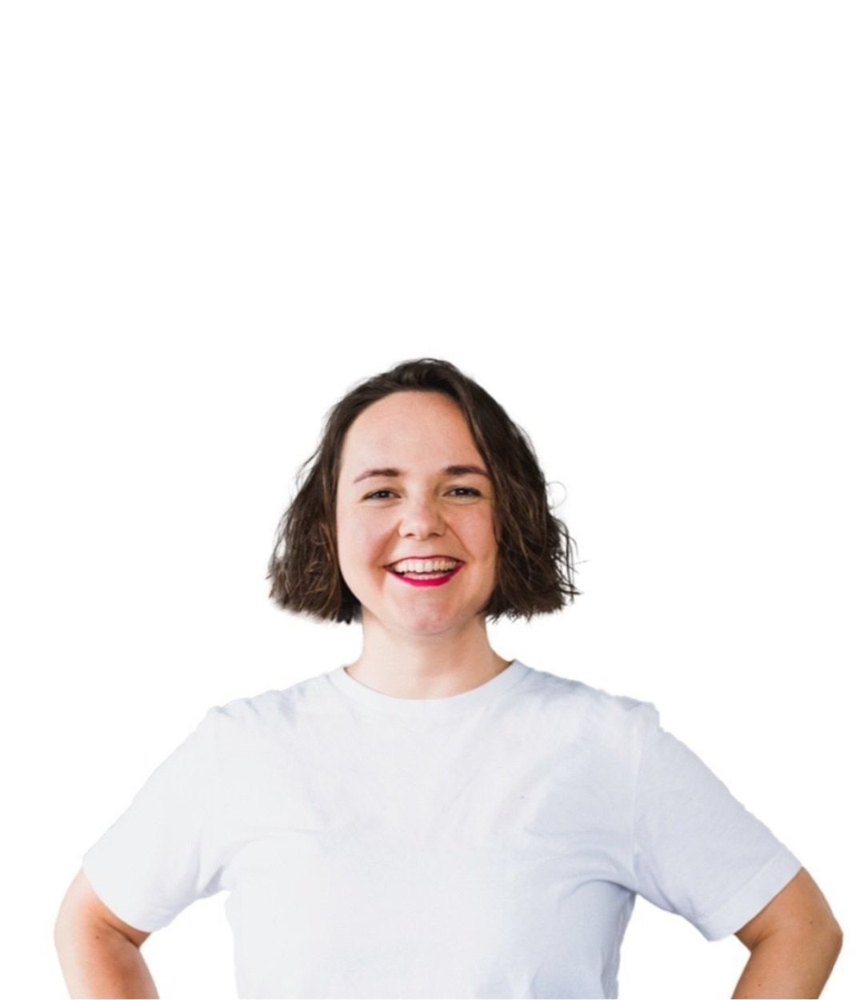

CasesBusiness Mentoring
Wie wir ZYKLUSPOWER von der Idee zum Business begleitet haben. How we took ZYKLUSPOWER from idea to business.
ZYKLUSPOWER ist ein Coaching- und Prozessbegleitungs-Business. Es zeigt menstruierenden Menschen und Organisationen, wie sie ihren Zyklus als Stärke nutzen. Alles in der Natur verläuft in Zyklen, auch wir. Wer diese Zyklen versteht und mit ihnen lebt, kommt wieder in Kontakt mit sich und aktiviert die eigenen Stärken. ZYKLUSPOWER is a coaching and process facilitation business. It shows menstruating people and organisations how to use their cycle as a strength. Everything in nature is cyclical, including us. Understanding these cycles and living in sync with them helps us reconnect with ourselves and activate our strengths.

Auf einen BlickAt a glance
Zielgruppe, Angebot, Marke und Kommunikation.Audience, offer, brand and communication.
Wir haben mit ZYKLUSPOWER die Zielgruppe definiert, das Angebot entwickelt, die Markenidentität geschaffen und eine Kommunikations- und Content-Strategie aufgebaut.With ZYKLUSPOWER we defined the target audience, crafted the offer suite, created the brand identity and developed a communication and content strategy.Lisa, Gründerin von THE GOOD CHANGE, sinngemäßLisa, founder of THE GOOD CHANGE, summarised
AusgangslageStarting point
Eine starke Mission, aber noch kein Business.A strong mission, but no business yet.
Als Franziska Ruhnau, Gründerin von ZYKLUSPOWER, zu THE GOOD CHANGE kam, hatte sie eine Idee mit einer klaren Mission: Menschen sollten verstehen, wie ihr Menstruationszyklus Alltag und Business beeinflusst.When Franziska Ruhnau, founder of ZYKLUSPOWER, came to THE GOOD CHANGE, she had an idea with a clear mission: helping people understand how their menstrual cycle affects everyday life and business.
Sie selbst hatte sieben Jahre unter PMDS gelitten, bis Zyklusbewusstsein ihr die Kontrolle über ihr Leben zurückgab. Diesen Weg wollte sie mit anderen gehen. Die Idee war klar, nur der Weg zu einem tragfähigen Business fehlte.She had suffered from PMDS for seven years until cycle awareness put her back in the driver's seat of her life. She wanted to guide others through that process. The idea was clear, but the path to a viable business was missing.
Wir haben ZYKLUSPOWER von Grund auf aufgebaut und dabei auch an Glaubenssätzen, Blockaden und der Angst vor Sichtbarkeit gearbeitet. Franziskas Wunsch: ein Business, das für ihr Wohlbefinden arbeitet und nicht dagegen. Die Antwort war ein klares Werteset, das in jedes Element einfließt: Strategie, Angebote, Zeitplan, Kommunikation und Kundenprofile.We built ZYKLUSPOWER from scratch, working through limiting beliefs, blocks and the fear of visibility along the way. Franziska's wish: a business that works for her wellbeing, not against it. The answer was a clear set of values woven into every element: strategy, offers, schedule, communication and client profiles.
VorgehenApproach
So haben wir ZYKLUSPOWER aufgebaut.How we built ZYKLUSPOWER.
Zehn Bausteine vom Geschäftsmodell bis zur Selbstführung als Gründerin.Ten building blocks from business model to self-leadership as a founder.
- 01Geschäftsmodell entwickeltCrafted the business model
- 02Ein klares Werteset in jedes Element des Business integriertIntegrated a clear set of values into every element of the business
- 03Zielgruppe und den Wandel für die Kundschaft definiertDefined the target audience and the change clients go through
- 04Formate strategisch entwickeltDeveloped formats strategically
- 05Formate getestet und verfeinertTested and refined formats
- 06Das Angebot gestaltetDesigned the offer suite
- 07Markenidentität und Styleguide entwickeltCreated brand identity and style guide
- 08Kommunikations- und Content-Strategie aufgebautDeveloped a communication and content strategy
- 09Eine wertebasierte Wachstumsstrategie entwickeltDeveloped a values-aligned growth strategy
- 10Achtsamkeitstechniken für Selbstführung und Resilienz als Gründerin integriertIntegrated mindfulness techniques for self-leadership and resilience as a founder
ErgebnisOutcome
Ein Business, das für sie arbeitet.A business that works for her.
Heute begleitet ZYKLUSPOWER menstruierende Menschen und Organisationen mit Zyklusbewusstsein durch Veränderung und Herausforderungen.Today ZYKLUSPOWER supports menstruating people and organisations through change and difficult phases with cycle awareness.
Menschen hat ZYKLUSPOWER seit der Zusammenarbeit in 1:1 Sessions, Workshops und Events begleitet, zurück zu sich und ihren Stärken.people have been supported by ZYKLUSPOWER in 1:1 sessions, workshops and events since we worked together, reconnecting with themselves and their strengths.
Feedback
Was Franziska über das Mentoring sagt.What Franziska says about the mentoring.
Franziska hat mit Lisa ihr Coaching-Business Schritt für Schritt aufgebaut, von den Werten über die Produkte bis zur Content-Strategie, in der richtigen Reihenfolge. Wenn es zu viel wird, holt Lisa sie auf den Boden zurück. Lisa ist für sie die Mischung aus großem Traum und klarem Plan. Ihre größte Erkenntnis: Allein geht es auch, begleitet ist es leichter, schöner und motivierender.Franziska built her coaching business with Lisa step by step, from values to products to content strategy, in the right order. When things get overwhelming, Lisa brings her back down to earth. For her, Lisa is the mix of dreaming big and having a clear plan. Her biggest learning: you can do it alone, but with support it's easier, more enjoyable and more motivating.Franziska Ruhnau, sinngemäß zusammengefasstFranziska Ruhnau, summarised
Passen wir zusammen?Are we a good fit?
Lass uns reden.Let's talk.
Der erste Schritt ist ein kostenloser Connection Call: 30 Minuten, um uns kennenzulernen und herauszufinden, wie THE GOOD CHANGE Dich oder Euer Team am besten unterstützen kann. The first step is a free connection call: 30 minutes to get to know each other and find out how THE GOOD CHANGE can best support you or your team.
Oder direkt:Or directly: hello@thegoodchange.co
So geht es losHow it starts
- 1Connection CallConnection call30 Minuten, kostenlos, unverbindlich.30 minutes, free, no strings attached.
- 2Klarheit über Dein AnliegenClarity on what you needWir sortieren gemeinsam, wo Du stehst und was Du brauchst.Together we sort out where you stand and what you need.
- 3Ein passendes AngebotA fitting offerCoaching, Mentoring, Training oder ein Projekt für Euer Team.Coaching, mentoring, training or a project for your team.